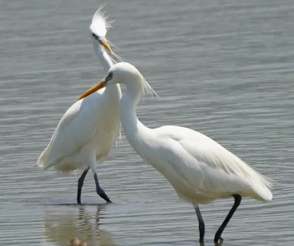

鸟类 · 动物界
黄嘴白鹭 Egretta eulophotes

东亚特有的白色中型鹭类，繁殖期喙呈鲜黄色、枕部生出细长冠羽，全球数量仅数千只，依赖海岛岩礁与沿海滩涂繁殖。
- 分类
- 门脊索动物门纲鸟纲目鹈形目科鹭科属白鹭属
- 栖息环境
- 沿海无人岛屿的岩礁与灌丛、滩涂、河口及浅水鱼塘
- 地理分布
- 繁殖于中国东部沿海、朝鲜半岛与俄罗斯远东；越冬于东南亚
- 保护级别
- IUCN 易危（VU）；中国国家二级保护动物
物种志
黄嘴白鹭体长约 55–65 厘米，翼展 85–95 厘米，体重 320–450 克。通体白色，繁殖期喙呈鲜艳的橙黄色，眼先裸露皮肤淡蓝，枕部生出十余枚细长的白色冠羽，背与前颈长出蓬松蓑羽；非繁殖期喙转为暗黄褐色，冠羽与蓑羽消失，腿由黑转黄绿。脚趾黄色，是区别于小白鹭的重要特征。
它们是东亚特有的候鸟，繁殖于朝鲜半岛西海岸、中国东部沿海岛屿与俄罗斯远东，越冬于东南亚。喜在无人海岛岩礁、矮树与灌丛上集群筑巢，常与白鹭、夜鹭混群，每窝产 3–4 枚卵，双亲孵卵约 24 天。觅食于沿海滩涂、河口和浅水鱼塘，捕食小鱼、虾、蟹与昆虫。由于沿海湿地围垦、捡蛋与人为干扰，其全球种群仅数千只，被列为易危物种，中国已建立多处海岛保护区。
形态与习性
- 体长约 55–65 cm，翼展 85–95 cm
- 体重约 320–450 g
- 食性小鱼、虾、蟹、昆虫与底栖动物
- 繁殖每窝 3–4 枚卵，双亲孵卵约 24 天
- 繁殖羽喙橙黄、眼先淡蓝、枕部生出十余枚细长冠羽
- 种群现状全球成鸟估计约 3000–5000 只，繁殖地高度集中
- 识别特征脚趾黄色，可与脚趾黄绿的小白鹭区分
趣味知识
- 繁殖季它的喙会变成鲜艳的橙黄色，枕后还拖着一束细长冠羽。
- 全球黄嘴白鹭的繁殖地屈指可数，多数集中在中国和朝鲜半岛的几座小岛。
- 它的脚趾是黄色的，这是与常见小白鹭区分的一个小窍门。